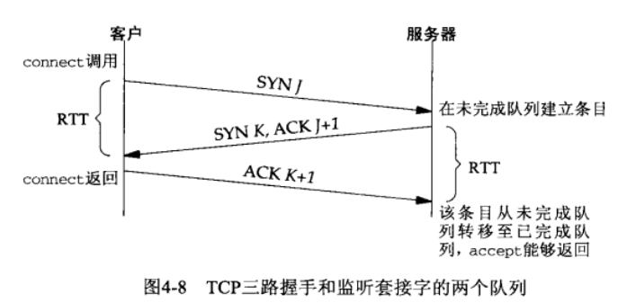

字节排序函数：
存储字节的方式：网络字节序统一为大端序
大端序：先保存最高位字节，高位字节放到低位地址
小端序：高位字节放到高位地址
TCP
调用流程:
其他：
套接字：
int socket(int domain, int type, int protocol);
参数：
返回值：成功时返回文件描述符，失败时返回-1
int bind(int sockfd, struct sockaddr* myaddr, socklen_t addrlen);
struct sockaddr_in{
sa_family_t sin_family; //取值：AF_INET ipv4；AF_INET6 ipv6 AF_LOCAL其他
uint16 sin_port; //该成员保存16位端口号，重点在于以网络字节序保存
struct in_addr sin_addr; //保存32位IP地址信息，以网络字节序保存，服务端IP地址指定为INADDR_ANY，服务器有多个网络接口，服务器进程就可以在 //任意网络接口上接受客户连接
char sin_zero[8];//预留
}
sin_addr需要使用转换函数：
#include <arpa/inet.h>
in_addr_t inet_addr(const char* str)：将字符串形式的IP地址转换成32位整数，并在转换类型的同时进行网络字节序的转换，失败返回INADDR_NONE
int listen(int sock, int backlog):
参数
返回值：失败时返回-1，成功时返回0
注意：
其他：

int accept(int sock, struct sockaddr* addr, socklen_t* addrlen); 服务端调用
int connect(int sock, struct sockaddr* servaddr, socklen_t addrlen);
参数：
sock：文件描述符
servaddr：地址结构体
addrlen：
返回值：成功时返回0，失败时返回-1
服务端响应：
状态变化：
注意：
断开连接：linux的close函数和windowsd的closesocket函数意味着完全断开，不仅无法传输数据，而且也不能接收数据
半关闭：#include<sys/socket.h>
int shutdown(int sock, int howto):即发送了EOF，同时又保留了输入流
参数：
返回值：成功时返回0，失败时返回-1
使用shutdown代替close的原因：
常用IO接口：
1. read&write：#include<unistd.h>
ssize_t read(int fd, void* buf, size_t nbytes);
参数：
fd：接受数据对象的文件描述符
buf：要保存接收数据的缓冲地址
nbytes:要接收数据的最大字节数
返回值：成功时返回接收的字节数，失败时返回-1
ssize_t write(int fd, const void*buf, size_t nbytes)
2。recv&send： #include <sys/socket.h>
ssize_t send(int sockfd, const void* buf, size_t nbytes, int flags)
参数：
返回值：成功时返回发送的字节数，失败时返回-1
ssize_t recv(int sockfd, void* buf, size_t nbytes, int flags)
参数：
sockfd：套接字描述符
buf：接收数据的缓冲地址
nbytes：可接收的最大字节数
flags：接收数据时指定的可选项信息
3.recvfrom&sendto
4。readv & writev：#include <sys/uio.h> 对数据进行整合传输及发送的函数，有助于提高数据通信效率，也就是说，可以将分散保存在多个缓存中的数据一并发送，通过readv函数可以由多个缓冲分别接收（也称为分散读，集中写）；
ssize_t writev(int filedes, const struct iovec* iov, int iovcnt)，
参数：
返回值：成功时返回发送的字节数，失败时返回-1
注：writev是一个原子操作，
ssize_t readv(int filedes, const struct iovec* iov, int iovcnt)
struct iovec {
ptr_t iov_base; /* Starting address */指向一个缓冲区，这个缓冲区是用来存放readv接受或writev发送的数据
size_t iov_len; /* Length in bytes */接受的最大长度或写入的实际长度
};
向量IO：readv/writev，是一种在单次系统调用中对多个缓冲区输入输出的方法，可以把多个缓冲区的数据写到单个数据流，也可把单个数据流读到多个缓冲区；
线性IO：标准读写系统调用read/write，称为线性IO
优势：
5.recvmsg&sendmsg：#include<sys/socket.h>
ssize_t recvmsg(int sockfd, struct msghdr* msg, int flags)
ssize_t sendmsg(int sockfd, struct msghdr* msg, int flags)
struct msghdr{
void *msg_name;
socklen_t msg_namelen;
struct iovec *msg_iov;
int msg_iovlen;
void* msg_control;
socklen_t msg_controllen;
int msg_flags;
}
6。标准I/O：
使用标准IO函数：#include<stdio.h>
FILE* fdopen(int fields, const char* mode); 可以通过该函数将创建套接字时返回的文件描述符转换为标准IO函数中使用的FILE结构体指针
int fileno(FILE* stream)：与fdopen函数相反
int close(int fd)：#include<unistd.h> fd为文件描述符，成功时返回0，失败时返回-1
原理：write函数调用后并非立即传输数据，read函数调用后也并非立即接收数据
IO缓冲特性如下：
IO缓冲在每个TCP套接字中单独存在
IO缓冲在创建套接字时自动生成
即使关闭套接字也会继续传递输出缓冲中遗留的数据
关闭套接字将丢失输入缓冲中的数据
5.fork和exec函数
6.getsockname和getpeername：
套接字选项：#include<sys/socket.h>
getsockopt(int sockfd, int level, int optname, void* optval, socklen_t* optlen);
setsockopt(int sockfd, int level, int optname, const void* optval, socklen_t optlen)